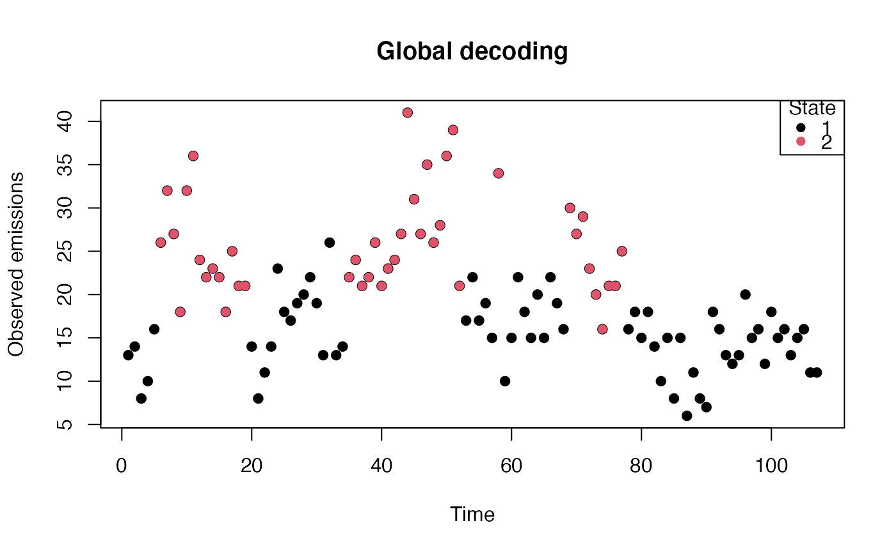
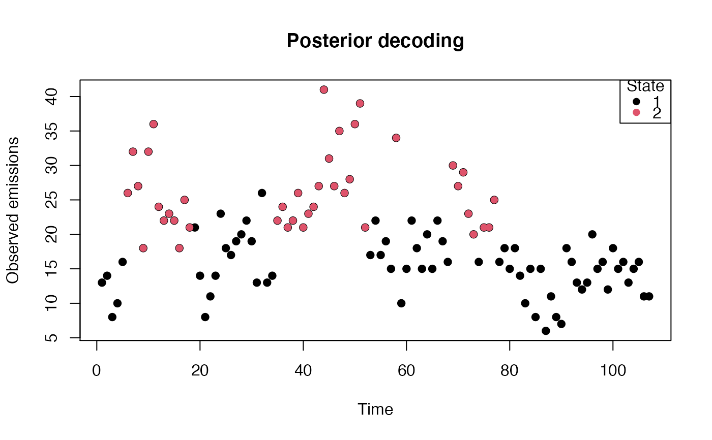
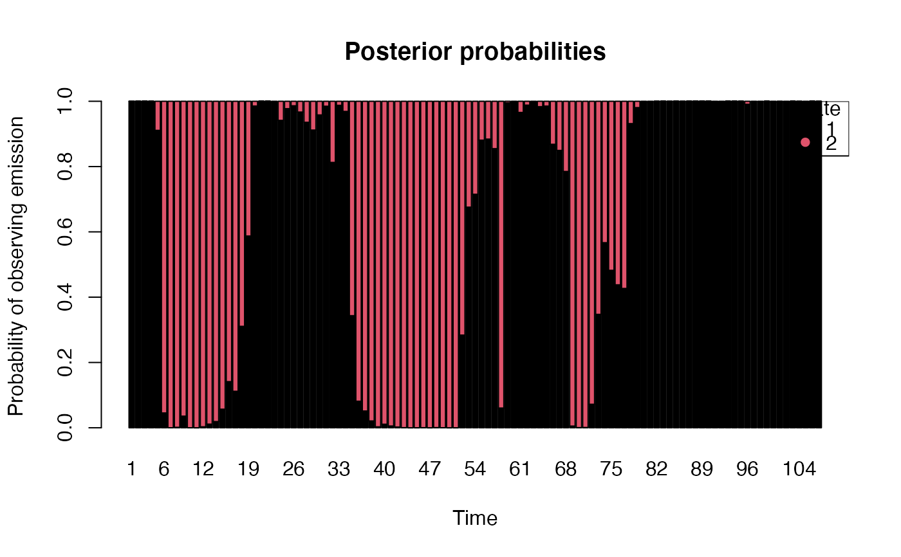

plot.hmm.RdPlotting Hidden Markov Models.
# S3 method for hmm
plot(
model,
legend_position = "topright",
xlab = "Time",
ylab = "Observed emissions",
cols = 1:model$m,
...
)Class hmm model.
Position of legend in plots.
Text for x-axis. Default 'Time'.
Text for y-axis. Default 'Observed emissions'.
Yields four plots stored in a list:
p1 | Plot of observed emissions by most likely hidden state (Global) |
p2 | Plot of observed emissions by most likely hidden state (Local) |
p3 | Plot of probs. used in Viterbi algorithm (Global) |
p4 | Plot of state probabilities (Local) |
## Continuation of Earthquake example
example(hmm)
#>
#> hmm> # Annual counts of earthquakes magnitude 7 or greater, 1900-2006.
#> hmm> # Source:
#> hmm> # Earthquake Data Base System of the U.S. Geological Survey, National
#> hmm> # Earthquake Information Center, Golden CO
#> hmm>
#> hmm> quakes <- read.table("http://www.hmms-for-time-series.de/second/data/earthquakes.txt")$V2
#>
#> hmm> Gamma <- rbind(c(0.9, 0.1), c(0.1, 0.9))
#>
#> hmm> delta <- c(1, 1)/2
#>
#> hmm> lambda <- c(10, 30)
#>
#> hmm> hmm.EQ <- hmm(quakes, Gamma, delta, dist='poisson', lambda=lambda)
#>
#> hmm> hmm.EQ
#> Hidden Markov Model with 2 states.
#> Initial distribution of Markov chain is:
#> [1] 1 0
#>
#> Transition probability matrix of Markov chain is:
#> 1 2
#> 1 0.9283388 0.07166123
#> 2 0.1189227 0.88107734
#>
#> Emission distribution family is poisson with parameters:
#> lambda
#> 1 15.41830
#> 2 26.01293
#>
#> hmm> # If one does not want estimation by EM algorithm (e.g. for comparison of summary statistics), it can be disabled
#> hmm> hmm.EQ_no_opt <- hmm(quakes, Gamma, delta, dist='poisson', lambda=lambda, estimate=FALSE)
#>
#> hmm> hmm.EQ_no_opt
#> Hidden Markov Model with 2 states.
#> Initial distribution of Markov chain is:
#> [1] 0.5 0.5
#>
#> Transition probability matrix of Markov chain is:
#> 1 2
#> 1 0.9 0.1
#> 2 0.1 0.9
#>
#> Emission distribution family is poisson with parameters:
#> lambda
#> 1 10
#> 2 30
#>
#> hmm> # Creating 'empty' hmm object for sake of simulation (see simulate for further details)
#> hmm> # Here where all emission distributions are normal
#> hmm> Gamma <- rbind(c(0.5, 0.25, 0.25),
#> hmm+ c(0.1, 0.8 , 0.1),
#> hmm+ c( 0, 0.2 , 0.8))
#>
#> hmm> delta <- c(1, 0, 0)
#>
#> hmm> mean <- c(0, 5, 10)
#>
#> hmm> sd <- rep(1, 3)
#>
#> hmm> hmm.normal <- hmm(NULL, Gamma=Gamma, delta=delta, dist='normal', mean=mean, sd=sd)
#>
#> hmm> hmm.normal
#> Hidden Markov Model with 3 states.
#> Initial distribution of Markov chain is:
#> [1] 1 0 0
#>
#> Transition probability matrix of Markov chain is:
#> 1 2 3
#> 1 0.5 0.25 0.25
#> 2 0.1 0.80 0.10
#> 3 0.0 0.20 0.80
#>
#> Emission distribution family is normal with parameters:
#> mean sd
#> 1 0 1
#> 2 5 1
#> 3 10 1
#>
#> hmm> # Here, the emission distributions are custom (Uniform[0, theta])
#> hmm> Gamma <- rbind(c(0.5, 0.25, 0.25),
#> hmm+ c(0.1, 0.8 , 0.1),
#> hmm+ c( 0, 0.2 , 0.8))
#>
#> hmm> delta <- c(1, 0, 0)
#>
#> hmm> theta <- list(1, 5, 10)
#>
#> hmm> lls <- function(x, param){dunif(x, 0, param)}
#>
#> hmm> lls_mle <- function(x, u){max(x)}
#>
#> hmm> rdist <- function(n, param){runif(n, 0, param)}
#>
#> hmm> hmm.unif <- hmm(NULL, Gamma=Gamma, delta=delta, lls=lls, param_lls=theta, lls_mle=lls_mle, rdist=rdist)
#>
#> hmm> hmm.unif
#> Hidden Markov Model with 3 states.
#> Initial distribution of Markov chain is:
#> [1] 1 0 0
#>
#> Transition probability matrix of Markov chain is:
#> 1 2 3
#> 1 0.5 0.25 0.25
#> 2 0.1 0.80 0.10
#> 3 0.0 0.20 0.80
#>
#> Emission distribution family is custom with parameters:
#> Param. 1
#> 1 1
#> 2 5
#> 3 10
#>
#> hmm> # Here, the emission distributions is either normal(0, 1) or exponential(1)
#> hmm> Gamma <- rbind(c(0.2, 0.8),
#> hmm+ c(0.8, 0.2))
#>
#> hmm> delta <- c(1, 1)/2
#>
#> hmm> param <- list(c(0, 1), 1)
#>
#> hmm> lls <- list(function(x, param){dnorm(x, param[1], param[2])},
#> hmm+ function(x, param){dexp(x, param)})
#>
#> hmm> lls_mle <- list(function(x, u){mean_hat <- sum(u*x) / sum(u); c(mean_hat, sqrt(sum(u*(x-mean_hat)^2) / sum(u)))},
#> hmm+ function(x, u){sum(u)/sum(u*x)})
#>
#> hmm> rdist <- list(function(n, param){do.call(rnorm, args=as.list(c(n, param)))},
#> hmm+ function(n, param){rexp(n, param)})
#>
#> hmm> hmm.mixture <- hmm(NULL, Gamma=Gamma, delta=delta, lls=lls, param_lls=param, lls_mle=lls_mle, rdist=rdist)
#>
#> hmm> hmm.mixture
#> Hidden Markov Model with 2 states.
#> Initial distribution of Markov chain is:
#> [1] 0.5 0.5
#>
#> Transition probability matrix of Markov chain is:
#> 1 2
#> 1 0.2 0.8
#> 2 0.8 0.2
#>
#> Emission distribution family is custom with parameters:
#> Param. 1 Param. 2
#> 1 0 1
#> 2 1
plot(hmm.EQ)


